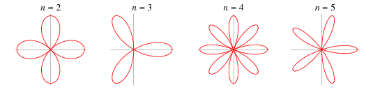

image
Course Info
Spring 2007
Course covers trigonometric functions, identities, graphs, vectors, polar coordinates, complex numbers, coordinate system rotation, change of basis, and conic sections.
Instructor Info
- Anthony Tanbakuchi
- Office: Radiology Research Labs, U of A, (520) 626-4500
- Easiest to contact me via email: kuchi@email.arizona.edu include "MAT182" in the subject.